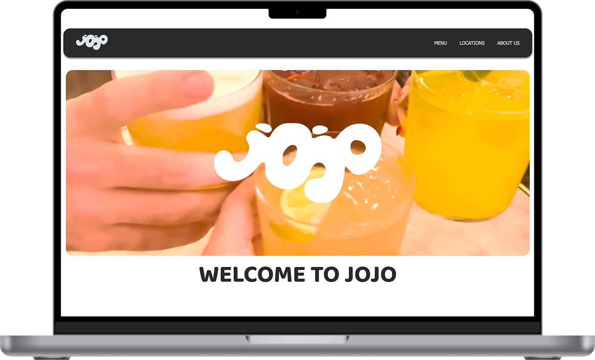

JOJO Cocktailbar
I dette projekt redesignede vi Cocktailbaren JOJO's eksisterende hjemmeside med fokus på at skabe en mere moderne og brugervenlig oplevelse. Vi arbejdede ud fra UX-principper for at gøre navigationen overskuelig og intuitiv og samtidig understøtte stedets visuelle identitet.
Jeg arbejdede blandt andet med UX/UI, Visuel retning, copy og billedemateriale. Det gav mig både erfaring med at udvikle indhold selv og ved hjælp af AI som en del af den kreative proces.
